Movement Explorer 是为 Movement Network 生态打造的专业区块链浏览器。用户可通过本平台查询链上所有公开数据，包括交易记录、账户信息、区块数据、验证者状态、代币资产以及网络运行指标等。
本项目采用现代前端技术栈构建，具备响应式设计，支持桌面端和移动端访问，提供流畅的交互体验。
| 功能模块 | 规划阶段 | 交付状态 |
|---|---|---|
| 基础架构搭建 | Phase 1 | ✅ 已完成 |
| 首页（网络统计 + 最新动态） | Phase 1 | ✅ 已完成 |
| 区块列表与详情页 | Phase 1 | ✅ 已完成 |
| 交易列表与详情页 | Phase 1 | ✅ 已完成 |
| 全局搜索 | Phase 1 | ✅ 已完成 |
| 网络切换 | Phase 1 | ✅ 已完成 |
| 交易详情（完整 Tabs） | Phase 2 | ✅ 已完成 |
| 账户详情页 | Phase 2 | ✅ 已完成 |
| 数据分析面板（Dashboard） | Phase 2 | ✅ 已完成 |
| 动画与过渡效果 | Phase 2 | ✅ 已完成 |
| 性能优化 | Phase 2 | ✅ 已完成 |
| 上线准备（部署 + 域名） | Phase 2 | 🔄 进行中 |
以下功能不在原始路线图规划内，在开发过程中根据产品需要主动补充实现：
| 额外功能 | 说明 |
|---|---|
| 验证者系统 | 验证者列表、详情页、地理分布图 |
| 钱包连接 | 集成 Aptos Wallet Standard，支持链上操作 |
| 代币/资产详情页 | 独立的 Coin、Fungible Asset、NFT 详情页 |
| CSV 数据导出 | 交易和区块数据支持导出为 CSV 文件 |
| 代币转账/NFT 转账页面 | 独立的转账记录查询页面 |
| Object 详情页 | Move Object 数据查询页面 |
首页是用户进入浏览器的第一个页面，提供 Movement 网络的全局概览。
核心指标展示（6 项）：
交易趋势图：
最新动态：
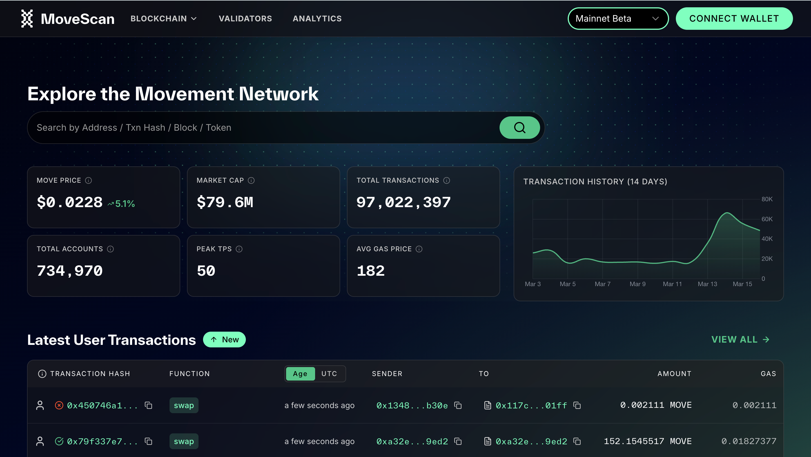
搜索栏位于首页顶部和导航栏中，支持快速查找链上各类数据。
支持的搜索类型：
交互特性：
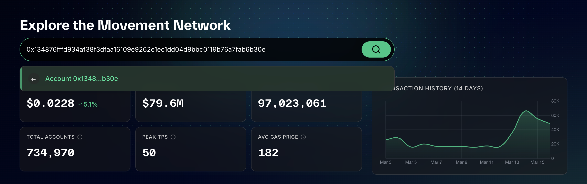
以表格形式展示全网交易记录，支持分页浏览。可在「用户交易」和「全部交易」两种视图间切换。
功能：
账户维度筛选（从账户页进入时）：
当通过账户页进入交易列表时，额外支持：
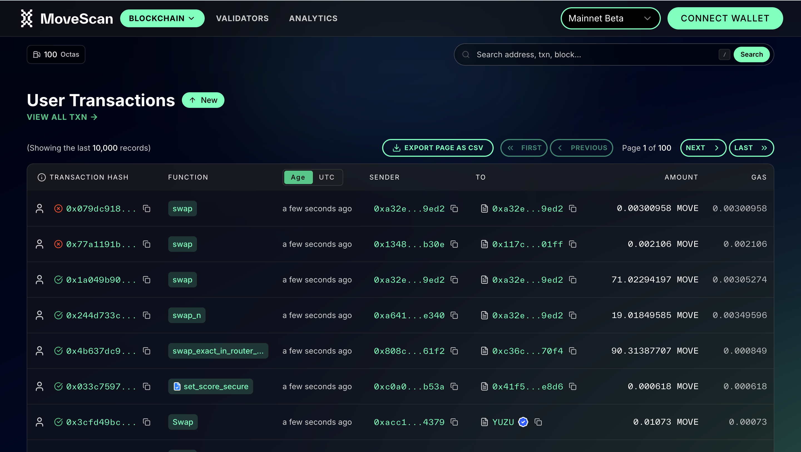
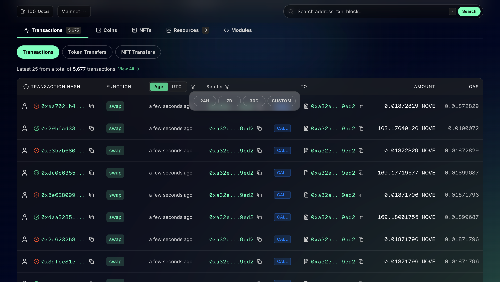
点击任意交易进入详情页，展示交易的完整信息。
概览信息：
详情标签页：
| 标签页 | 内容 |
|---|---|
| 余额变动 | 直观展示代币流入/流出，绿色表示收入、红色表示支出 |
| 事件 (Events) | 交易触发的所有链上事件，支持表格和 JSON 两种查看方式 |
| 载荷 (Payload) | 调用的函数、类型参数、调用参数，支持 JSON 解码视图 |
| 变更 (Changes) | 全局存储的创建 / 修改 / 删除记录，支持表格和 JSON 查看 |
| Raw JSON | 完整交易原始 JSON 数据 |
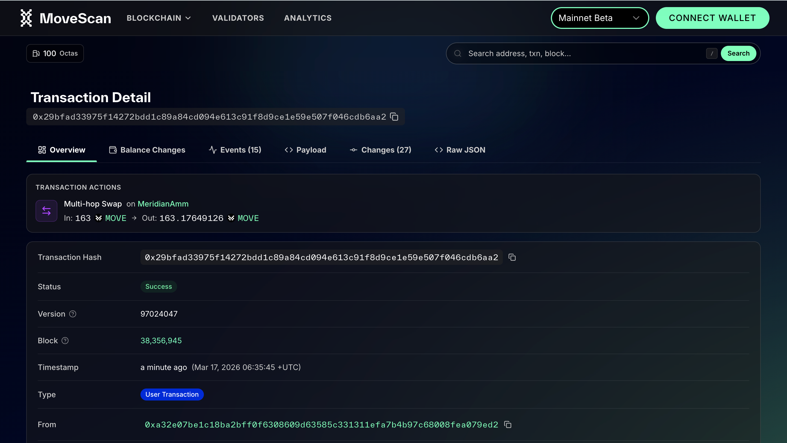
展示最新区块列表，每 3 秒检测一次新区块，有新区块时顶部提示用户刷新。
点击区块进入详情页，展示：
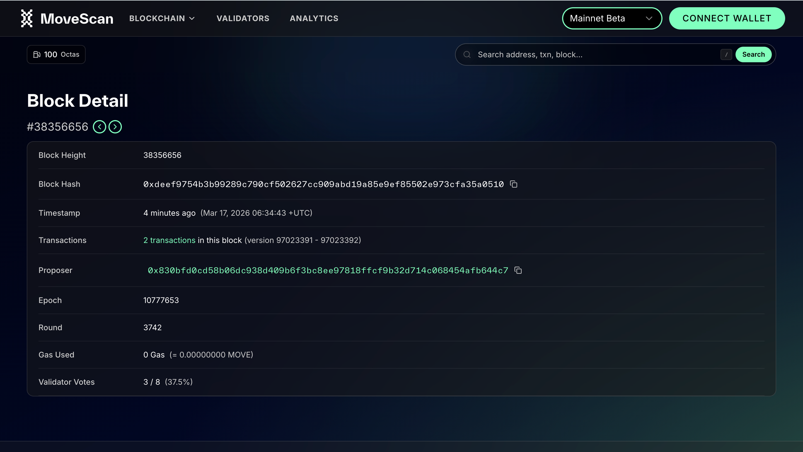
输入或搜索任意地址即可查看该账户的完整信息。
账户概览：
详情标签页（共 5 个）：
| 标签页 | 内容 |
|---|---|
| 交易 | 该账户的交易历史，支持地址 / 类型筛选 |
| 代币 (Coins) | 持有的所有代币及余额，支持美元估值、隐藏小额资产、搜索 |
| NFT | 持有的 NFT 资产，支持网格 / 列表视图切换，显示图片缩略图 |
| 模块 (Modules) | 账户部署的智能合约，支持源码高亮显示和合约交互（读/写） |
| 资源 (Resources) | 账户挂载的 Move 资源，树形结构展开查看 |
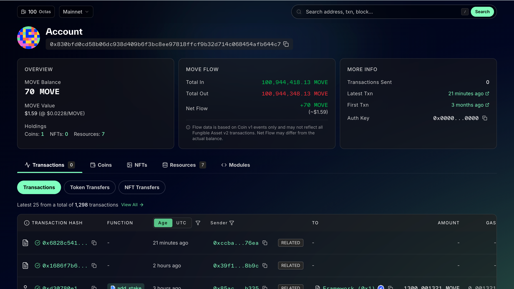
独立的验证者板块，展示 Movement 网络所有验证节点的运行状态。
网络统计：
验证者表格：
地理分布图：
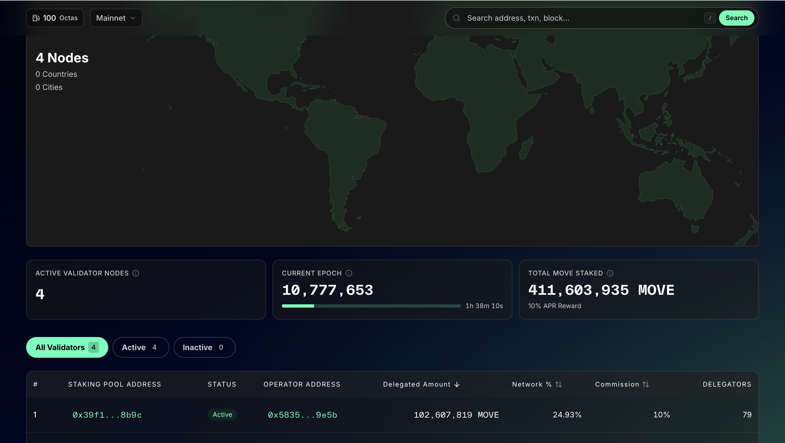
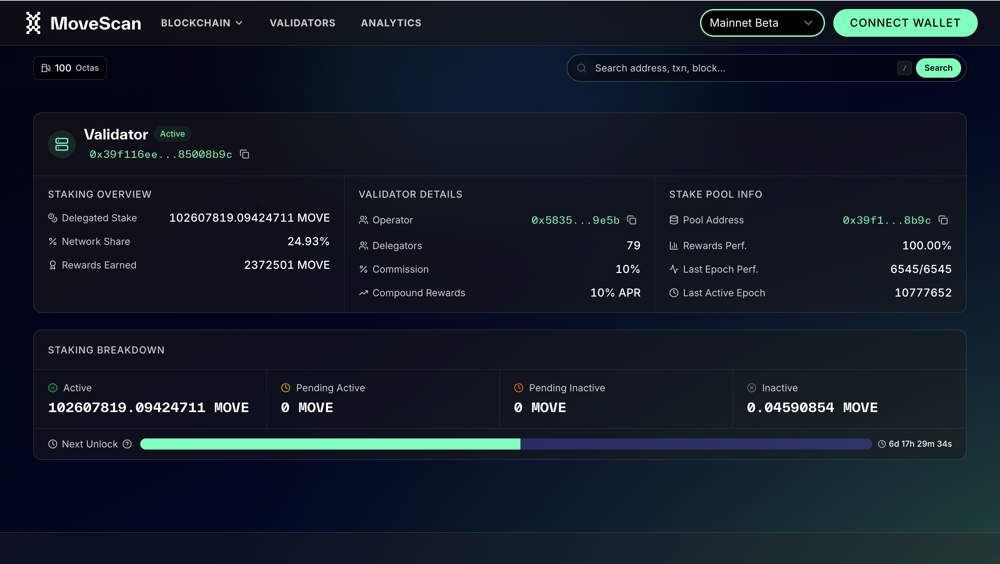
独立的数据分析页面，提供 Movement 网络的多维度运行指标。
9 种图表，分 4 个版块：
网络活跃度：
用户指标：
开发者活跃度：
Gas 与手续费：
交互功能：
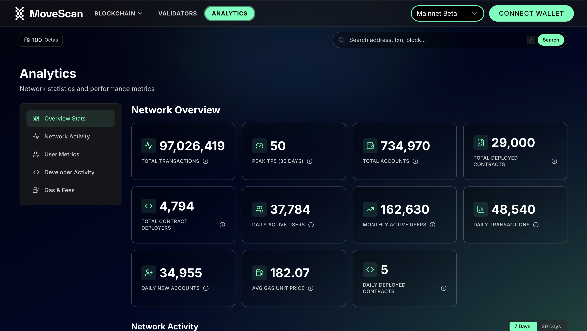
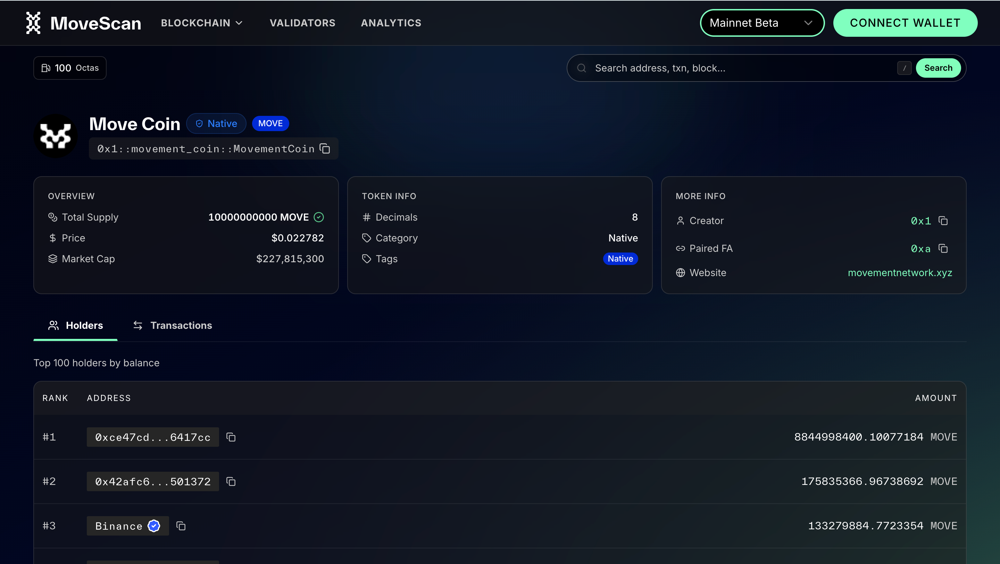
支持用户连接个人钱包，实现链上操作。
钱包支持方式：
通过 Aptos Wallet Standard 自动发现用户已安装的兼容钱包，代表性支持包括：
功能：
支持在不同 Movement 网络间自由切换：
| 网络 | 说明 |
|---|---|
| Mainnet（主网） | 默认网络，正式运行环境 |
| Bardock Testnet（测试网） | 开发和测试用途 |
交易列表和区块列表均支持将当前页数据导出为 CSV 文件，方便用户进行离线分析或记录留存。
设备适配：
主题支持：
本项目共包含 15 个独立页面 / 路由：
| 序号 | 页面 | 路径 | 说明 |
|---|---|---|---|
| 1 | 首页 | / | 网络概览与最新动态 |
| 2 | 交易列表 | /transactions | 全网交易记录 |
| 3 | 交易详情 | /txn/[hash] | 单笔交易完整信息 |
| 4 | 区块列表 | /blocks | 最新区块列表 |
| 5 | 区块详情 | /block/[height] | 单个区块完整信息 |
| 6 | 账户详情 | /account/[address] | 账户信息与资产 |
| 7 | 验证者列表 | /validators | 验证节点概览 |
| 8 | 验证者详情 | /validator/[address] | 单个验证者信息 |
| 9 | 数据分析 | /analytics | 网络运行指标图表 |
| 10 | Coin 详情 | /coin/[struct] | 代币信息与活动 |
| 11 | FA 详情 | /fa/[address] | Fungible Asset 信息 |
| 12 | Token 详情 | /token/[tokenId] | NFT / Token 信息 |
| 13 | Object 详情 | /object/[address] | Move Object 信息 |
| 14 | 代币转账 | /token-transfers | 代币转账记录 |
| 15 | NFT 转账 | /nft-transfers | NFT 转账记录 |
| 维度 | 选型 |
|---|---|
| 前端框架 | Next.js 16 + React 19 |
| 开发语言 | TypeScript（全量类型安全） |
| UI 组件库 | Movement Design System + Radix UI |
| 样式方案 | Tailwind CSS v4 |
| 状态管理 | Zustand（全局状态）+ TanStack Query（服务端数据缓存） |
| 图表库 | Chart.js |
| 地图 | React Simple Maps |
| 动画 | Framer Motion |
| 区块链 SDK | Aptos TS SDK（REST + GraphQL 双通道） |
| 包管理 | pnpm |
数据获取架构：
| 指标 | 数值 |
|---|---|
| 源代码文件数 | 225+ |
| 自定义 React 组件 | 100+ |
| 数据查询 Hook | 69 个 |
| 主要页面 / 路由 | 15 个 |
| 分析图表类型 | 9 种 |
| 支持钱包 | 6 种 |
| 支持网络 | 2 个（主网 + 测试网） |
现状说明：
在账户的交易记录页面中，用户通常希望能按「方向」筛选交易，例如：
目前，索引器数据服务（Indexer）只提供了「发送方」字段，没有提供「接收方」字段。这意味着：
当前的临时方案：
浏览器目前在前端（用户浏览器端）解析每笔交易的详细内容来判断方向，但这种方式只能对当前页面显示的数据生效（通常为 25 条），无法对全部历史交易进行筛选。
解决路径：
已向 Movement 技术团队提出索引器数据服务升级需求，需要后端在数据接口中增加以下字段：
| 需要的字段 | 作用 |
|---|---|
| 接收方地址 | 实现转入、转出、自转、关联交易的精确筛选 |
| 交易类型标识 | 区分「转账」和「合约调用」 |
| 金额范围筛选 | 支持按转账金额大小进行过滤 |
| 函数名称筛选 | 支持按调用的具体操作进行过滤 |
备注：NFT（数字藏品）相关的转账记录已具备上述所有字段，可以正常筛选。此问题仅影响代币（Coin）转账记录。一旦索引器数据服务完成升级，浏览器端可快速适配，无需大幅修改。
当前状态：
后续可扩展方向（供参考）：
| 方向 | 说明 |
|---|---|
| 索引器数据服务升级适配 | 待 Indexer 新增字段后，完善交易方向筛选 |
| 国际化（i18n） | 支持中文 / 英文等多语言切换 |
| 搜索增强 | 模糊搜索、下拉自动补全建议 |
| 更多分析指标 | 更多维度的网络数据图表 |
群内反馈优化说明：社区群内收到的所有用户反馈与建议均已完成优化，相关改进已全部落地至当前版本。
Movement Explorer MVP 版本已按计划完成全部核心功能的开发与交付，涵盖首页、交易、区块、账户、搜索、网络切换、数据分析面板等 Phase 1 与 Phase 2 规划的所有模块。在此基础上，还额外交付了验证者系统、钱包连接、代币资产详情页、CSV 导出等增值功能。
目前存在一项已知限制：代币交易的方向筛选（转入/转出/自转等）受索引器数据服务字段缺失影响，仅能在当前页面范围内生效。该问题已向 Movement 后端团队反馈，待数据服务升级后即可完整支持。
项目当前已部署至测试环境，核心功能运行稳定，准备进入正式上线阶段。